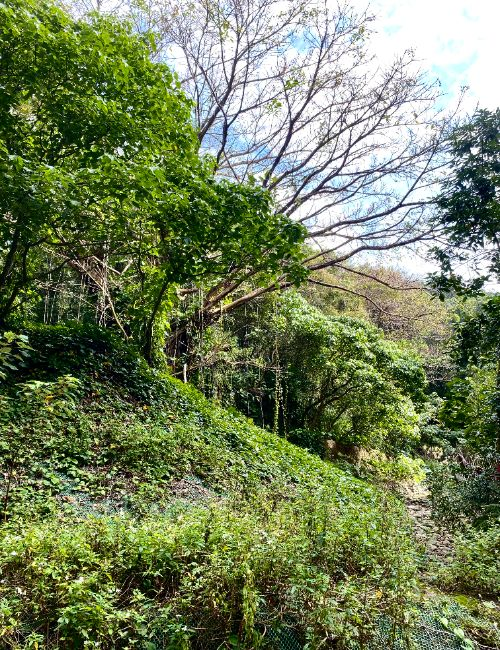

A reason of why I am interested in Langlands.
Quick links to project introduction/notes
Quick link to more recent notes
Geometric langlands
- Annotated translation of Ngo's first proof and second proof with Polo.
- Annotated lecture notes of Scholze's 2020 Bonn lectures.
- An introductury notes on local Shtukas.

Old notes